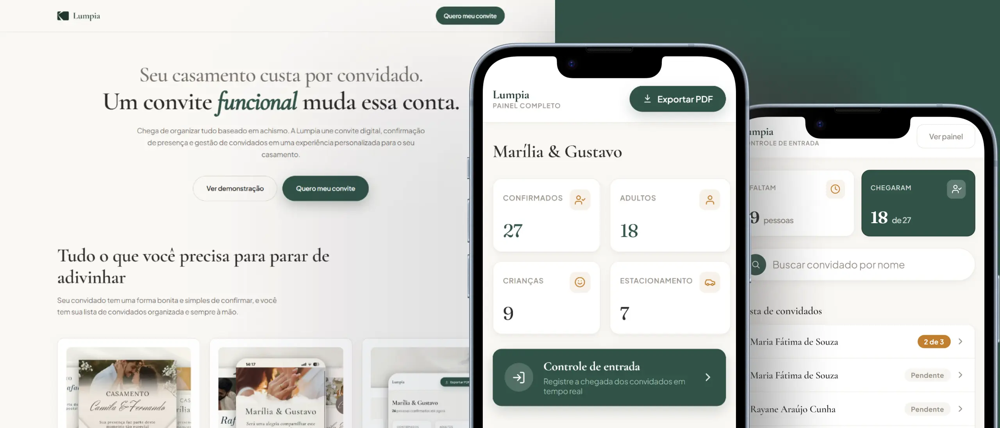
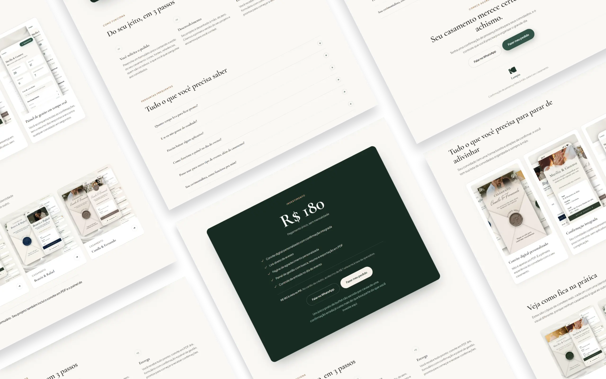
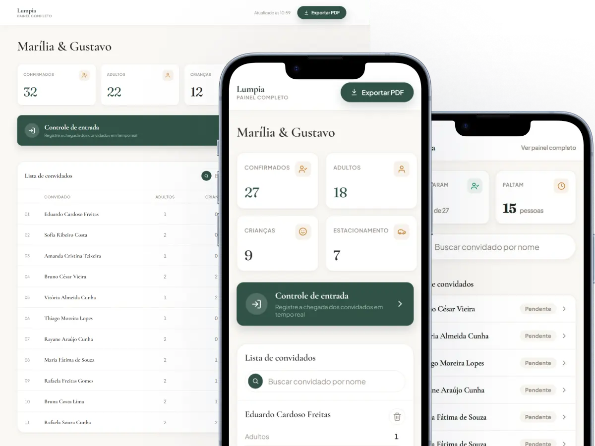

Lumpia
Projetei e implementei a experiência digital completa da Lumpia. Da landing page ao painel usado durante o próprio casamento, para acompanhar a chegada dos convidados em tempo real.
Apresentando o produto
Estruturei a landing page da Lumpia: apresentação do produto, diferenciais, fluxo de funcionamento e demonstração das soluções, comunicando a proposta de valor de forma clara para quem está decidindo contratar.

Uma central para gestão e operação do evento
Desenvolvi uma experiência completa para apoiar os organizadores antes e durante o casamento. Criei o painel de gestão de convidados, reunindo confirmações, informações individuais e os principais indicadores do evento em uma única interface, e também uma interface dedicada ao dia do casamento, permitindo localizar convidados, acompanhar e registrar a entrada de pessoas em tempo real.
A solução foi pensada para simplificar uma operação naturalmente complexa, com informações claras e acessíveis tanto em desktop quanto em dispositivos móveis.

Do design ao código
Além de projetar as interfaces, fui responsável pela implementação: desenvolvi as soluções em HTML, CSS e JavaScript, conectadas ao back-end, transformando as decisões de UX/UI em uma experiência funcional de ponta a ponta.
Isso me deu visibilidade das limitações técnicas reais do projeto, permitindo estruturar as interações com mais precisão e garantir que a intenção do design se mantivesse intacta até a entrega final.

Uma experiência pensada de ponta a ponta
Da apresentação do produto ao controle de entrada no dia do evento, a Lumpia reúne design e implementação em uma única entrega: do UX/UI ao código em produção.
Próximo projeto Aptta